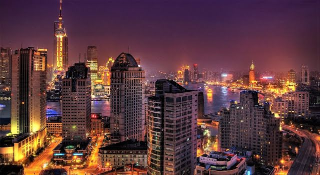

Surabaya Metropolitan City
Surabaya is the capital of East Java Province and the center of government and economy as well as the largest city in the province. Surabaya is also a city located in East Java Province, Indonesia. Surabaya is the second largest city in Indonesia after Jakarta. Surabaya is characterized by an open, friendly and expressive society, as well as a distinctive "Suroboyoan" dialect with the greetings "Cak" and "Ning". As Surabaya reflects a vibrant metropolitan city, it has plenty of local food and tourist attractions for you to explore!